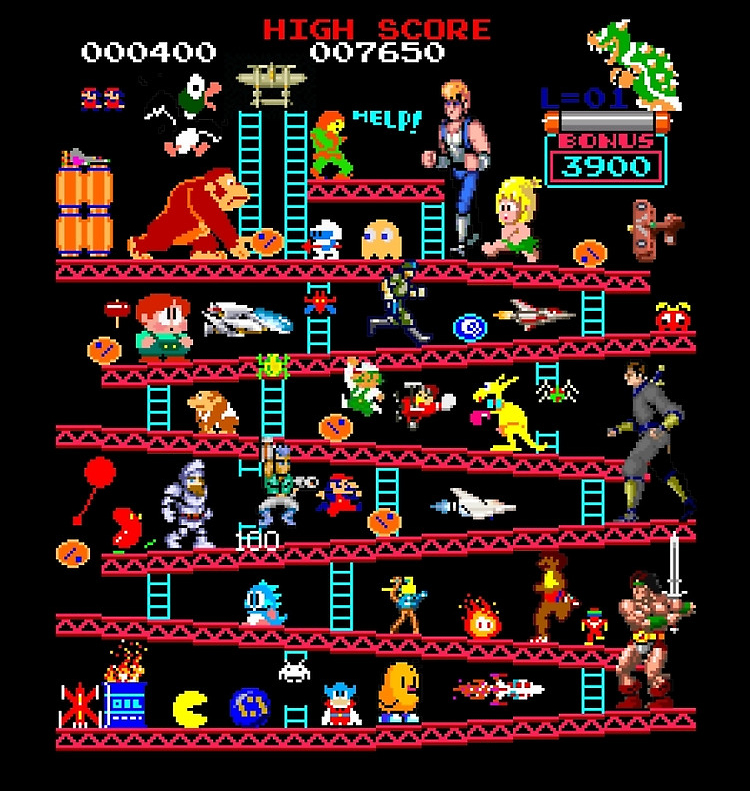

2011 - Accounting Course completed Association of Accountants - Belgrade, Serbia
2008 - University Degree in Business - Alpha University - Belgrade, Serbia
2000 - ITAcademy, Link Group - Belgrade, Serbia, Web Development - PHP, MySQL, Apache, JavaScript, HTML, CSS
MS Office Course completed
1999 - High School Nikola Tesla - Belgrade, Serbia - Highschool Diploma in Elektrical Engineering

2019 Sales Administator „Gigatron“ , Belgrade, Serbia
• Sale of technical goods.
• Handover of goods, making orders.
• Opening and closing days.
• Work with money and different types of billing.
• Invoicing of goods, making invoices and their realization.
• Daily communication with the bank, credit agreements and payments.
• MTS contracting and implementation.
• Coordination of logistics, procurement, courier services and clients.
• Coordination of logistics, procurement, services and customers.
• Resolving complaints.
2016 Seller of Sony branded goods “Sony Center”, Belgrade,Serbia
• Sale of TVs, sound systems and accessorries.
• Handover a goods.
• Cash register work.
2013 PhP Programmer “Zavod za proucavanje kulturnog razvitka” Belgrade, Serbia http://www.teslaways.rs/index.php?page=12
2011 Store Manager “DS Market”, Belgrade,Serbia
• Responsible for all orders, invoices, bills and shipping.
• Responsible for online sales and web site maintenance.
• Handled costumers’ inquiries, in person or by phone.
2008 Sales Representative „JAT Airways“ Belgrade, Serbia
• Responsible for sales planning.
• Responsible for marketing.
2005-2007 Delivery Person „DHL“ Belgrade, Serbia
• Responsible for all orders, invoices, bills and shipping.
• Handled costumers’ inquiries, in person or by phone.
Is League of Legends a real hobby? Yet I'm playing it from end of first season - 01 - best online game made of json, php, nodeJs.
This hobby has also given me great analytical skill, i can see absolutely every mistake I've made afterwards.